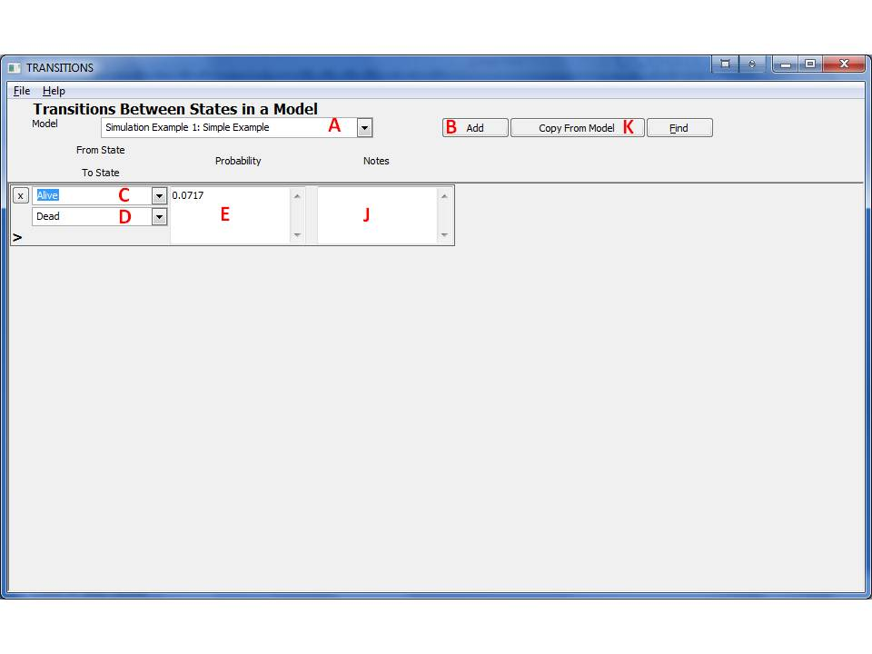
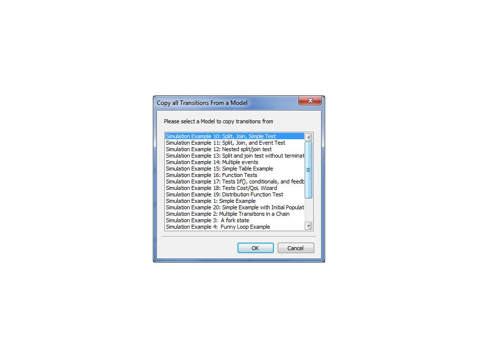

9 Transitions
Transitions connect states/processes within a model. Below, they are indicated by solid arrows and indicate the paths that subjects can take through the model and the probabilities to take a path in a certain time step.

9.1 Creating Transitions
- From the main window, click 'Transitions' on the left navigation pane. This form can also be reached from a Model form by selecting the transition button for a certain Model.

- This form shows the transitions for a given Model. Select the Model to be used from the drop-down box (A). Note: if the Transitions page was opened from the Model page, that Model will be selected and the combo box will be grayed out.
- Click the 'Add' button (B).
- Select the origin state for the transition (D).
- Select the destination state for the transition (E).
- Enter the transition probability in the box (F) as an expression, which may or may not include Parameters and State Indicators.
- It is recommended you add notes regarding the transition in (J). It is a good idea to write down the source of the information in the notes to improve model traceability.
- Close the form to save the entry.
9.2 Removing Transitions
Identify the row that will be removed, and click the 'X' button (C) in that row. This may require deletion of other entities and may be difficult if the deletion candidate was extensively used.
9.3 Copying Transitions from Another Model
It may be desirable to build or modify a model by copying transition information from another model. The systems support this sort of copy using the following steps:
- Initiate the transitions copy by pressing the Copy From Model button (K). The following form will appear:

- Select the model you wish to copy the transitions from by clicking on it.
- Press OK to initiate the copy or Cancel to abort the copy operation.
- If the operation was not aborted, the system will bring a message indicating how many transitions were successfully copied. Dismiss this dialog box by pressing OK and the transitions form will display the copied transitions.
Note that this operation is useful while creating variations of a specific model that change the state/sub-process hierarchy. The copy transitions operation will try to copy all the transitions from the source model to the destination model. However, some transitions may not be copied as these may violate validation rules. Here are examples of transitions that will not be copied:
- Transitions that are already defined by states in the destination model will not be copied from the source model.
- Transitions where at least one of the states does not exist in the destination Model will not be copied.
- Transitions that will violate the sub-process hierarchy will not be copied. For example if the to/from states are not in the same sub-process in the destination model.